2025年4月 第1回 回覧板
目次
回覧文書
1. 令和７年度赤十字活動資金の募集について （依頼）

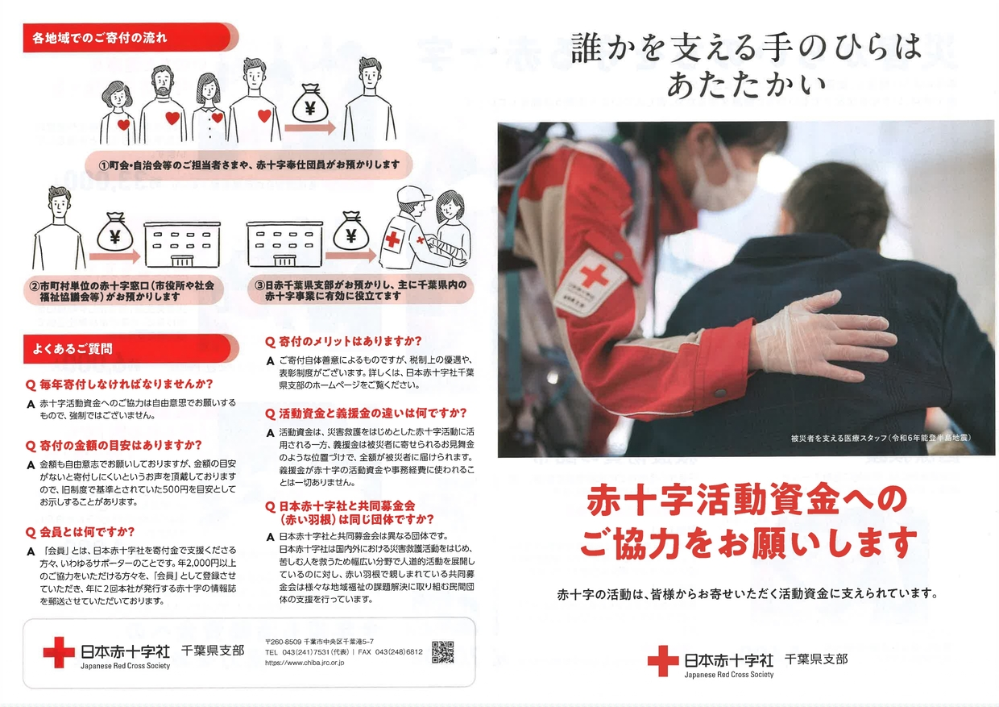

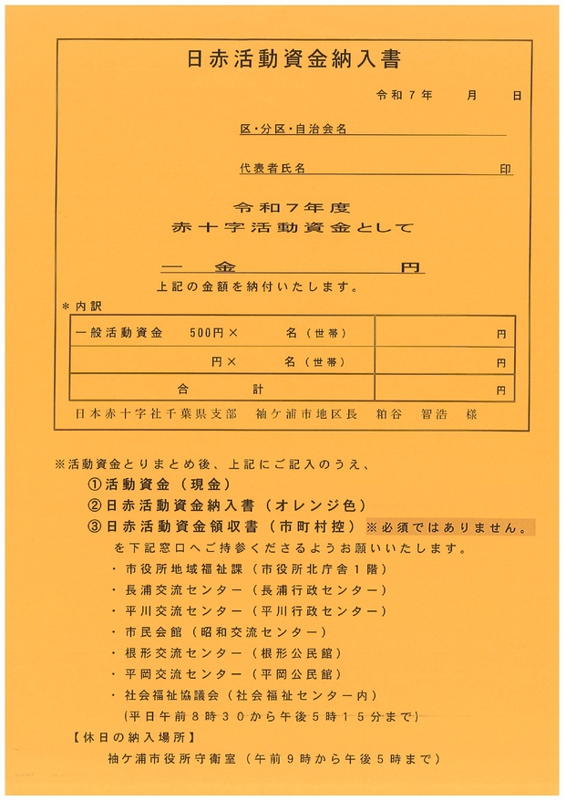
2. 令和７年度袖ケ浦市社会福祉協議会費の納入について（依頼）


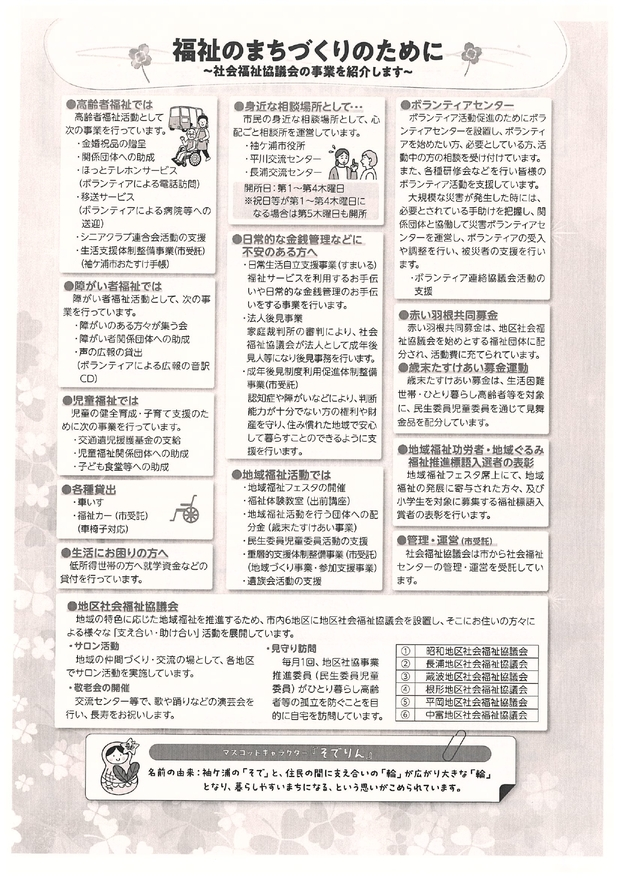
3. 令和７年度緑の募金運動について（依頼）


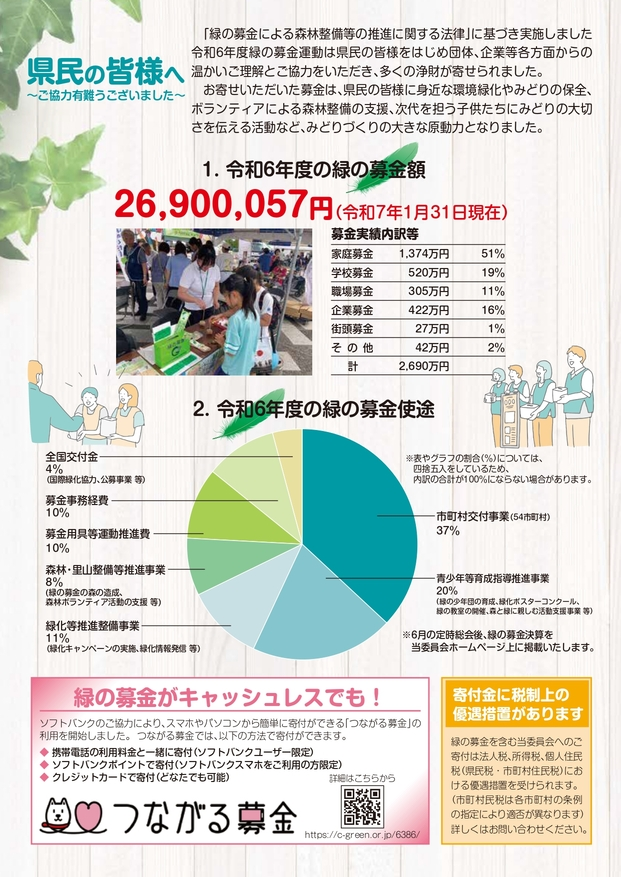
4. 令和７年度第１回市内一斉清掃の実施について（依頼）
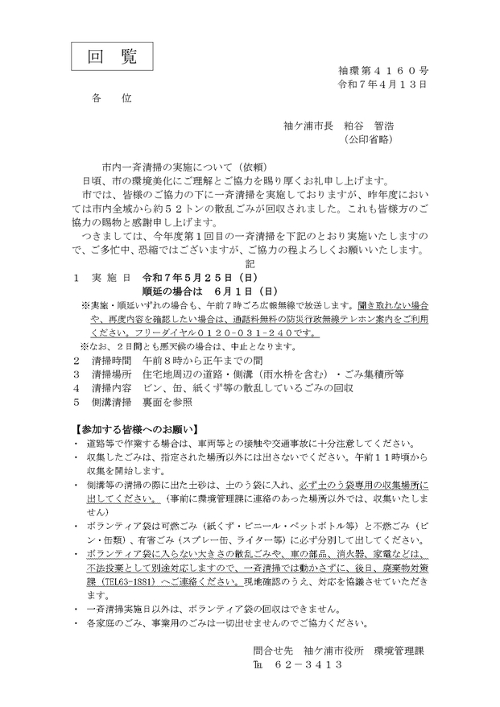

5. 「駅からハイキング」の開催について
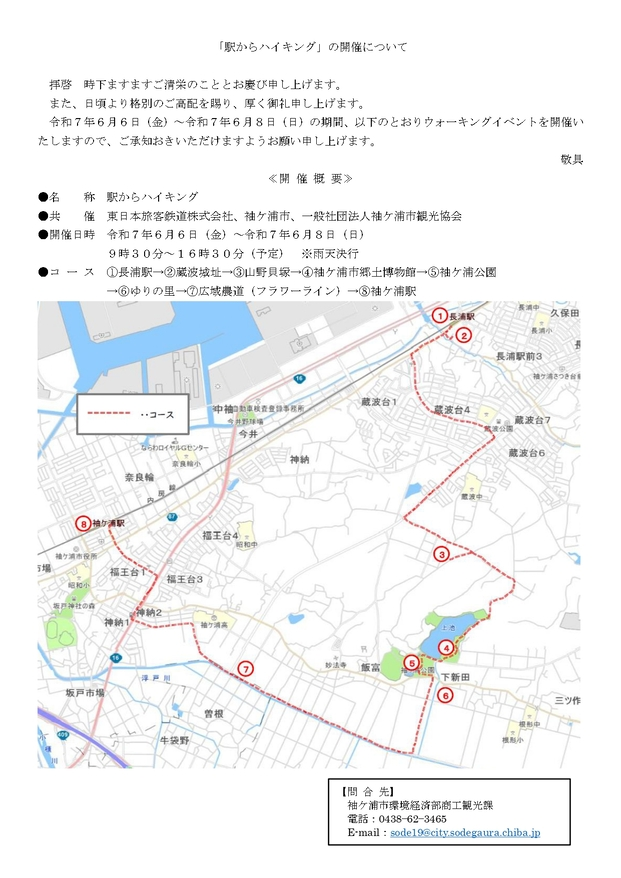
6. 「地域安全ニュースふれあい第３４９号」及び 「犯罪発生地図」
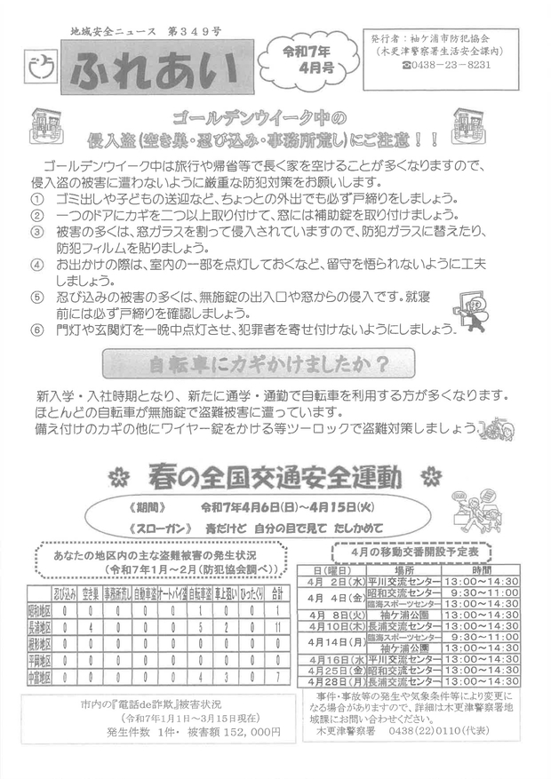
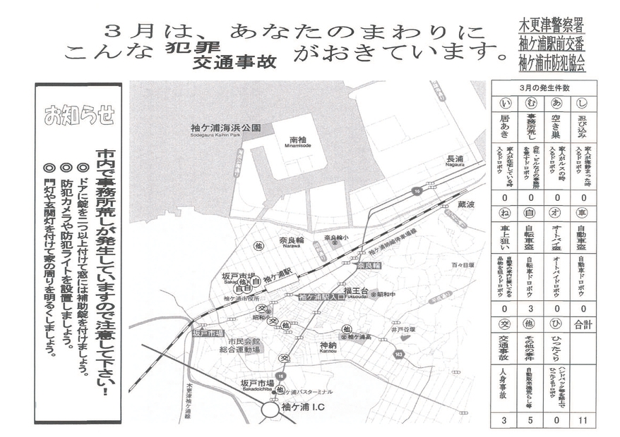
7. 「高校生からシニア従業員のお仕事説明会」
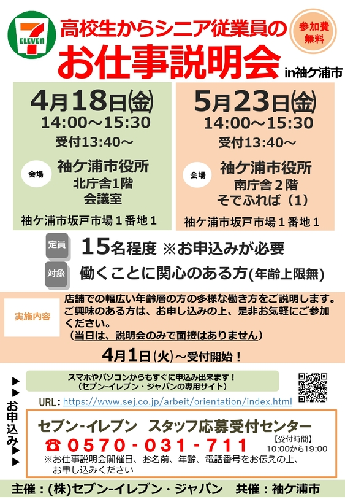
8. 全国瞬時警報システム（Jアラート）全国一斉情報伝達試験の実施について（お知らせ）
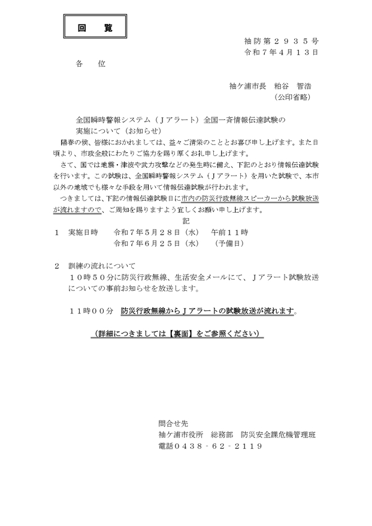
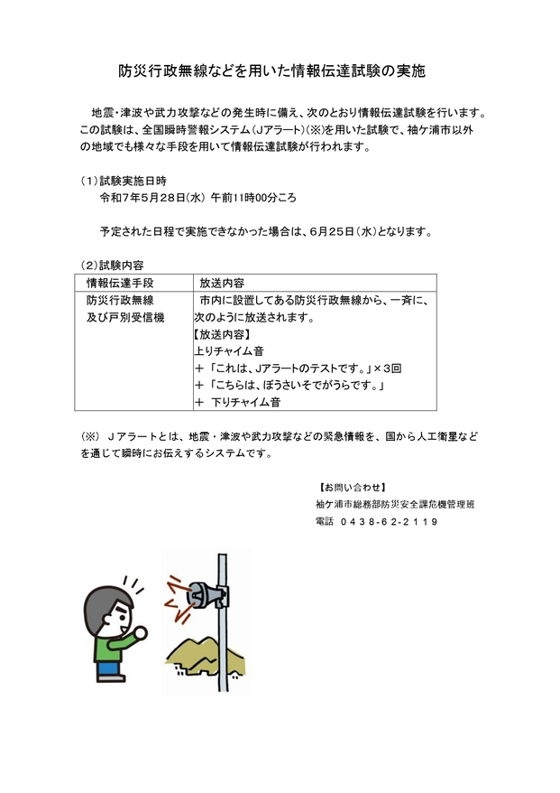
9. 住宅用火災警報器設置状況調査の実施について（通知）

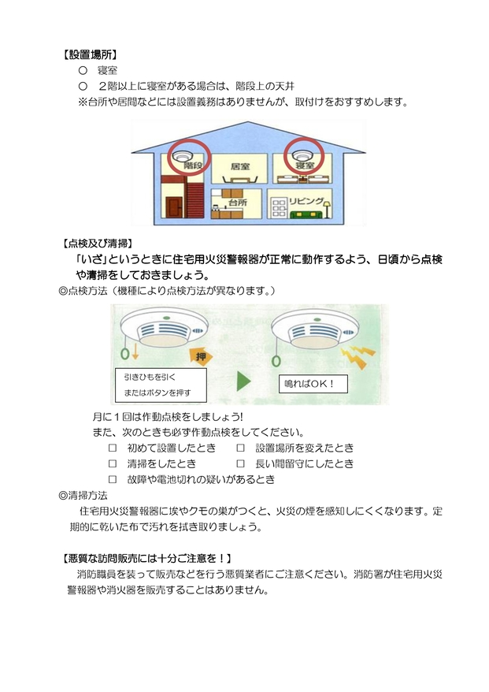
10. 「シニアそでがうら」第３５号


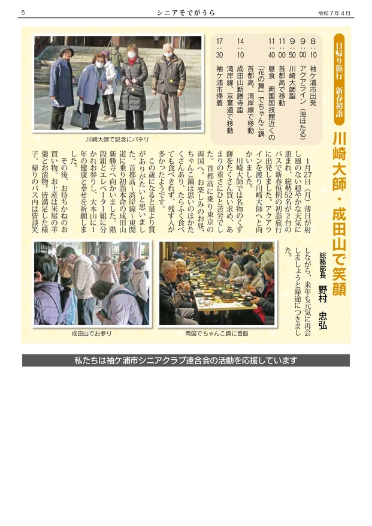

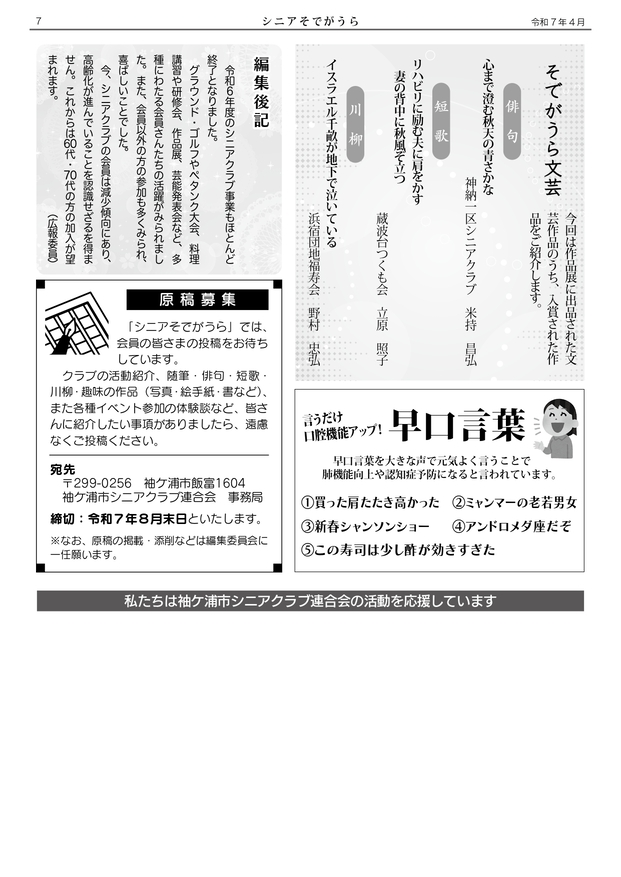

← トップページに戻る